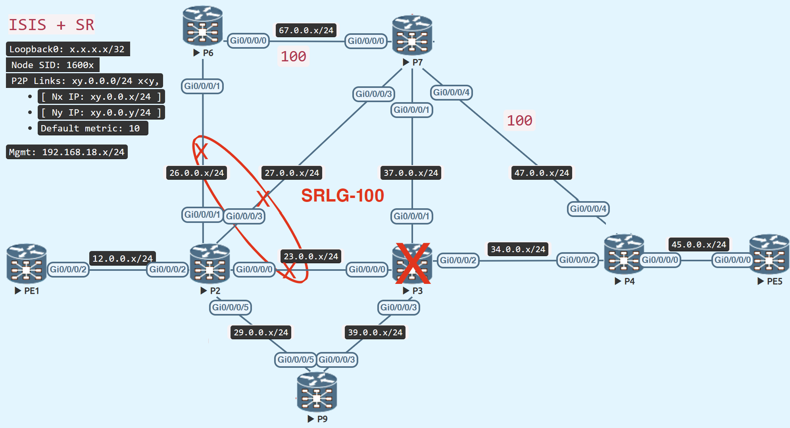

TI-LFA Tiebreaker (Link vs SRLG vs Node)

Prepare Topology
Add a new router, P9, to the old topology and configure it for SR-MPLS and TI-LFA.
interface Loopback0
ipv4 address 9.9.9.9 255.255.255.255
!
interface GigabitEthernet0/0/0/3
ipv4 address 39.0.0.9 255.255.255.0
no shutdown
!
interface GigabitEthernet0/0/0/5
ipv4 address 29.0.0.9 255.255.255.0
no shutdown
!
router isis IGP
is-type level-2-only
net 49.0000.0000.0009.00
log adjacency changes
address-family ipv4 unicast
metric-style wide level 2
segment-routing mpls sr-prefer
!
interface Loopback0
passive
address-family ipv4 unicast
prefix-sid index 9
!
!
interface GigabitEthernet0/0/0/3
circuit-type level-2-only
point-to-point
hello-padding disable
address-family ipv4 unicast
fast-reroute per-prefix
fast-reroute per-prefix ti-lfa
metric 10
!
!
interface GigabitEthernet0/0/0/5
circuit-type level-2-only
point-to-point
hello-padding disable
address-family ipv4 unicast
fast-reroute per-prefix
fast-reroute per-prefix ti-lfa
metric 10
!
!
!
mpls oam
Link Protection Preferred
Add the link between P2 and P6 to the same SRLG group as P2 and P7 and P2 and P3.

Link Protection Index
We cannot adjust the lowest index (or maximum preference) for link protection.
- P2 – P3 – P4 – PE5 (metric: 30)
| Protection | Via | Path | Metric | Preference |
|---|---|---|---|---|
| Link | P9 | P9 – P3 – P4 – PE5 | 40 | 1st |
| SRLG | P9 | P9 – P3 – P4 – PE5 | 40 | 2nd |
| Node | P7 | P7 – P4 – PE5 | 120 | 3rd |
Link Protection Preferred
Because node and srlg protection are not available concurrently, the tiebreaker chooses link protection computation as the best backup path, therefore ti-lfa falls back to link protection.
RP/0/RP0/CPU0:P2#show isis fast-reroute 5.5.5.5/32 detail
Wed Feb 1 12:12:11.367 UTC
L2 5.5.5.5/32 [30/115] Label: 16005, medium priority
Installed Feb 01 12:12:05.762 for 00:00:06
via 23.0.0.3, GigabitEthernet0/0/0/0, Label: 16005, P3, SRGB Base: 16000, Weight: 0
Backup path: LFA, via 29.0.0.9, GigabitEthernet0/0/0/5, Label: 16005, P9, SRGB Base: 16000, Weight: 0, Metric: 40
P: No, TM: 40, LC: No, NP: No, D: No, SRLG: Yes
src PE5.00-00, 5.5.5.5, prefix-SID index 5, R:0 N:1 P:0 E:0 V:0 L:0, Alg:0
RP/0/RP0/CPU0:P2#
RP/0/RP0/CPU0:P2#show route 5.5.5.5/32
Wed Feb 1 12:12:17.549 UTC
Routing entry for 5.5.5.5/32
Known via "isis IGP", distance 115, metric 30, labeled SR, type level-2
Installed Feb 1 12:12:05.762 for 00:00:11
Routing Descriptor Blocks
23.0.0.3, from 5.5.5.5, via GigabitEthernet0/0/0/0, Protected
Route metric is 30
29.0.0.9, from 5.5.5.5, via GigabitEthernet0/0/0/5, Backup (Local-LFA)
Route metric is 40
No advertising protos.
RP/0/RP0/CPU0:P2#
RP/0/RP0/CPU0:P2#show cef 5.5.5.5/32
Wed Feb 1 12:12:55.469 UTC
5.5.5.5/32, version 1340, labeled SR, internal 0x1000001 0x8310 (ptr 0xe727de0) [1], 0x600 (0xe190578), 0xa28 (0xf559100)
Updated Feb 1 12:12:05.768
remote adjacency to GigabitEthernet0/0/0/0
Prefix Len 32, traffic index 0, precedence n/a, priority 1
gateway array (0xdffae98) reference count 6, flags 0x500068, source rib (7), 1 backups
[3 type 5 flags 0x8401 (0xeb74608) ext 0x0 (0x0)]
LW-LDI[type=5, refc=3, ptr=0xe190578, sh-ldi=0xeb74608]
gateway array update type-time 1 Feb 1 12:12:05.767
LDI Update time Feb 1 12:12:05.767
LW-LDI-TS Feb 1 12:12:05.767
via 23.0.0.3/32, GigabitEthernet0/0/0/0, 10 dependencies, weight 0, class 0, protected [flags 0x400]
path-idx 0 bkup-idx 1 NHID 0x0 [0xdda6ea0 0x0]
next hop 23.0.0.3/32
local label 16005 labels imposed {16005}
via 29.0.0.9/32, GigabitEthernet0/0/0/5, 21 dependencies, weight 0, class 0, backup (Local-LFA) [flags 0x300]
path-idx 1 NHID 0x0 [0xf399f10 0x0]
next hop 29.0.0.9/32
remote adjacency
local label 16005 labels imposed {16005}
Load distribution: 0 (refcount 3)
Hash OK Interface Address
0 Y GigabitEthernet0/0/0/0 remote
RP/0/RP0/CPU0:P2(config)#
SRLG Protection Preferred
Increase the metric between P9 and P3, such that link protection is no longer available.

- P2 – P3 – P4 – PE5 (metric: 30)
| Protection | Via | Path | Metric | Preference |
|---|---|---|---|---|
| Link | P7 | P7 – P4 – PE5 | 120 | NA (path has SRLG) |
| SRLG | P9 | P9 – P3 – P4 – PE5 | 130 | 1st |
| Node | P7 | P7 – P4 – PE5 | 120 | 2nd |
SRLG Protection Preferred
Because link protection alone is not available owing to clashes with SRLG links, and SRLG has a higher priority or lower index than Node protection, the tiebreaker favours SRLG-disjoint protection computation as the best backup option.
RP/0/RP0/CPU0:P2#show isis fast-reroute 5.5.5.5/32 detail
Wed Feb 1 12:16:47.226 UTC
L2 5.5.5.5/32 [30/115] Label: 16005, medium priority
Installed Feb 01 12:13:34.896 for 00:03:13
via 23.0.0.3, GigabitEthernet0/0/0/0, Label: 16005, P3, SRGB Base: 16000, Weight: 0
Backup path: TI-LFA (srlg), via 29.0.0.9, GigabitEthernet0/0/0/5 P9, SRGB Base: 16000, Weight: 0, Metric: 130
P node: P9.00 [9.9.9.9], Label: ImpNull
Q node: P3.00 [3.3.3.3], Label: 24001
Prefix label: 16005
Backup-src: PE5.00
P: No, TM: 130, LC: No, NP: No, D: No, SRLG: Yes
src PE5.00-00, 5.5.5.5, prefix-SID index 5, R:0 N:1 P:0 E:0 V:0 L:0, Alg:0
RP/0/RP0/CPU0:P2#
RP/0/RP0/CPU0:P2#show route 5.5.5.5/32
Wed Feb 1 12:16:56.680 UTC
Routing entry for 5.5.5.5/32
Known via "isis IGP", distance 115, metric 30, labeled SR, type level-2
Installed Feb 1 12:13:34.897 for 00:03:21
Routing Descriptor Blocks
23.0.0.3, from 5.5.5.5, via GigabitEthernet0/0/0/0, Protected
Route metric is 30
29.0.0.9, from 5.5.5.5, via GigabitEthernet0/0/0/5, Backup (TI-LFA)
Repair Node(s): 9.9.9.9, 3.3.3.3
Route metric is 130
No advertising protos.
RP/0/RP0/CPU0:P2#
RP/0/RP0/CPU0:P2#show cef 5.5.5.5/32
Wed Feb 1 12:17:07.318 UTC
5.5.5.5/32, version 1371, labeled SR, internal 0x1000001 0x8310 (ptr 0xe727de0) [1], 0x600 (0xe191460), 0xa28 (0xf559628)
Updated Feb 1 12:13:34.914
remote adjacency to GigabitEthernet0/0/0/0
Prefix Len 32, traffic index 0, precedence n/a, priority 1
gateway array (0xdffb890) reference count 6, flags 0x500068, source rib (7), 1 backups
[5 type 4 flags 0x8401 (0xeb74008) ext 0x0 (0x0)]
LW-LDI[type=1, refc=1, ptr=0xe191460, sh-ldi=0xeb74008]
gateway array update type-time 1 Feb 1 12:13:34.914
LDI Update time Feb 1 12:13:34.914
LW-LDI-TS Feb 1 12:13:34.914
via 23.0.0.3/32, GigabitEthernet0/0/0/0, 14 dependencies, weight 0, class 0, protected [flags 0x400]
path-idx 0 bkup-idx 1 NHID 0x0 [0xdda6ea0 0xdda6ea0]
next hop 23.0.0.3/32
local label 16005 labels imposed {16005}
via 29.0.0.9/32, GigabitEthernet0/0/0/5, 22 dependencies, weight 0, class 0, backup (TI-LFA) [flags 0xb00]
path-idx 1 NHID 0x0 [0xf399f10 0x0]
next hop 29.0.0.9/32, Repair Node(s): 9.9.9.9, 3.3.3.3
remote adjacency
local label 16005 labels imposed {ImplNull 24001 16005}
Load distribution: 0 (refcount 5)
Hash OK Interface Address
0 Y GigabitEthernet0/0/0/0 remote
RP/0/RP0/CPU0:P2#
Node Protection Preferred
Increase the SRLG index to make node-protection the preferable option.
- P2 – P3 – P4 – PE5 (metric: 30)
| Protection | Via | Path | Metric | Preference |
|---|---|---|---|---|
| Link | P7 | P7 – P4 – PE5 | 120 | NA (path has SRLG) |
| SRLG | P9 | P9 – P3 – P4 – PE5 | 130 | 2nd |
| Node | P7 | P7 – P4 – PE5 | 120 | 1st |
Node Protection Preferred
Because it has a lower index or higher priority than SRLG, the tiebreaker selects Node protection calculation as the optimal backup path. Furthermore, link protection is not available on its own.
RP/0/RP0/CPU0:P2#show isis fast-reroute 5.5.5.5/32 detail
Wed Feb 1 12:18:04.104 UTC
L2 5.5.5.5/32 [30/115] Label: 16005, medium priority
Installed Feb 01 12:17:48.448 for 00:00:16
via 23.0.0.3, GigabitEthernet0/0/0/0, Label: 16005, P3, SRGB Base: 16000, Weight: 0
Backup path: TI-LFA (node), via 27.0.0.7, GigabitEthernet0/0/0/3 P7, SRGB Base: 16000, Weight: 0, Metric: 120
P node: P7.00 [7.7.7.7], Label: ImpNull
Q node: P4.00 [4.4.4.4], Label: 24014
Prefix label: 16005
Backup-src: PE5.00
P: No, TM: 120, LC: No, NP: Yes, D: No, SRLG: No
src PE5.00-00, 5.5.5.5, prefix-SID index 5, R:0 N:1 P:0 E:0 V:0 L:0, Alg:0
RP/0/RP0/CPU0:P2#
RP/0/RP0/CPU0:P2#show route 5.5.5.5/32
Wed Feb 1 12:18:17.246 UTC
Routing entry for 5.5.5.5/32
Known via "isis IGP", distance 115, metric 30, labeled SR, type level-2
Installed Feb 1 12:17:48.449 for 00:00:28
Routing Descriptor Blocks
23.0.0.3, from 5.5.5.5, via GigabitEthernet0/0/0/0, Protected
Route metric is 30
27.0.0.7, from 5.5.5.5, via GigabitEthernet0/0/0/3, Backup (TI-LFA)
Repair Node(s): 7.7.7.7, 4.4.4.4
Route metric is 120
No advertising protos.
RP/0/RP0/CPU0:P2#
RP/0/RP0/CPU0:P2#show cef 5.5.5.5/32
Wed Feb 1 12:18:22.190 UTC
5.5.5.5/32, version 1388, labeled SR, internal 0x1000001 0x8310 (ptr 0xe727de0) [1], 0x600 (0xe191460), 0xa28 (0xf559ec0)
Updated Feb 1 12:17:48.453
remote adjacency to GigabitEthernet0/0/0/0
Prefix Len 32, traffic index 0, precedence n/a, priority 1
gateway array (0xdffa4a0) reference count 6, flags 0x500068, source rib (7), 1 backups
[5 type 4 flags 0x8401 (0xeb744e8) ext 0x0 (0x0)]
LW-LDI[type=1, refc=1, ptr=0xe191460, sh-ldi=0xeb744e8]
gateway array update type-time 1 Feb 1 12:17:48.453
LDI Update time Feb 1 12:17:48.455
LW-LDI-TS Feb 1 12:17:48.455
via 23.0.0.3/32, GigabitEthernet0/0/0/0, 8 dependencies, weight 0, class 0, protected [flags 0x400]
path-idx 0 bkup-idx 1 NHID 0x0 [0xdda6db0 0xdda6db0]
next hop 23.0.0.3/32
local label 16005 labels imposed {16005}
via 27.0.0.7/32, GigabitEthernet0/0/0/3, 8 dependencies, weight 0, class 0, backup (TI-LFA) [flags 0xb00]
path-idx 1 NHID 0x0 [0xf39a4b0 0x0]
next hop 27.0.0.7/32, Repair Node(s): 7.7.7.7, 4.4.4.4
remote adjacency
local label 16005 labels imposed {ImplNull 24014 16005}
Load distribution: 0 (refcount 5)
Hash OK Interface Address
0 Y GigabitEthernet0/0/0/0 remote
RP/0/RP0/CPU0:P2#